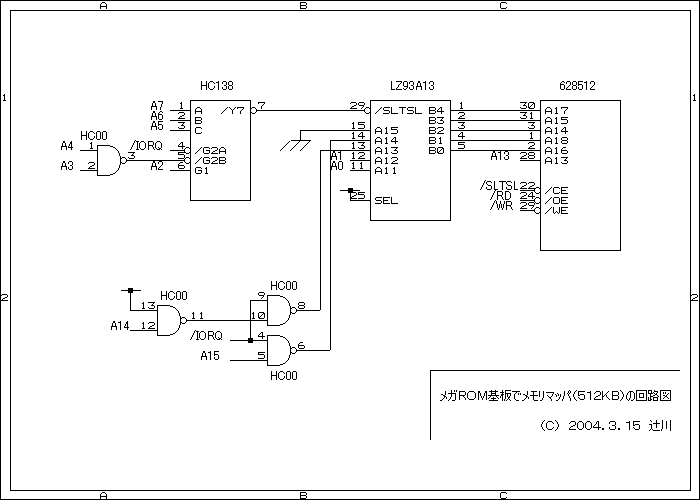
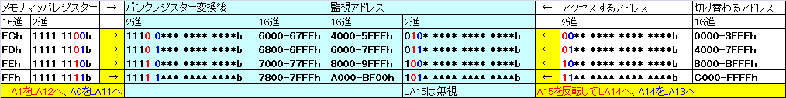
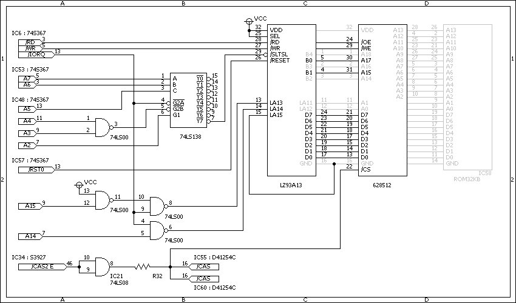
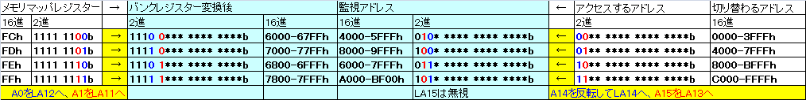
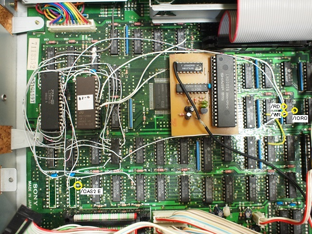
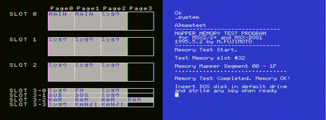

HC138はメガロムコントローラー（LZ93A13）がアクティブになるための信号（/SLTSL） を作っています。 メモリマッパではI/Oポートの16進表記でFC〜FFh（2進表記で1111 1100〜1111 1111b） に値を書き込むことで対応するページのバンクを切り替えます。 FCh：ページ０（0000-3FFFh：00** **** **** ****b） FDh：ページ１（4000-7FFFh：01** **** **** ****b） FEh：ページ２（8000-BFFFh：10** **** **** ****b） FFh：ページ３（C000-FFFFh：11** **** **** ****b） HC138の出力/Y7はI/Oポートへのアクセスを意味する/IORQがLowで、A7〜A2がHighの時、 すなわちFC〜FFhの時にLowとなります。 LZ93A13の他の入力LA15〜LA11（信号名が同じでややこしいので、とりあえず頭にLを 付けました）はどうなっているか見てみると、LA15はLowで固定。LA14とLA13はA15と A14から作られています。LA12とLA11はA1とA0が入っています。これを読み解くと、 /IORQがLowの時はLA14とLA13はA15とA14とは関係なくHighになります。 つまり、LZ93A13からみたアドレスは 011(A1) (A0)*** **** ****b (A1)と(A0)は上に書いたメモリマッパでどのページを選ぶかを選択するbit（FC〜FFh のC〜Fを決定する最後の2bit）です。 つまり/IORQがLowの時にA1とA0の組み合わせによって 0110 0*** **** ****b = 6000-67FFh 0110 1*** **** ****b = 6800-6FFFh 0111 0*** **** ****b = 7000-77FFh 0111 1*** **** ****b = 7800-7FFFh に変換されることになります。 LZ93A13のSEL信号がHighですので、メガロムコントローラーは8kモードとなり、バンク レジスターの働きは以下のようになります。 バンク切り替え8kBモード時 バンクレジスターのアドレス 切り替わるアドレス 6000-67FFh 4000-5FFFh 6800-6FFFh 6000-7FFFh 7000-77FFh 8000-9FFFh 7800-7FFFh A000-BFFFh つまり、IOポートへのアクセスがバンクレジスターのアクセスに変換されることになり ます。 鋭い人はお気づきかと思いますが、メモリマッパは0000h〜FFFFh(64kB)を4分割した 16kB毎に切り替えますが、メガロムコントローラは4000h〜BFFFh(32kB)を4分割した 8kB単位で切り替えます。メガロムコントローラーは16kBで切り替えるモードも持っ ていますが、切り替えられるアドレスは4000〜BFFFhを２分割するだけでバンクレジ スターも2個になってしまうので今回は使えません。とりあえずバンクレジスターが 4個あるということがここでは重要なのです。では、4000h〜BFFFhでしか切り替えら れないのにメモリマッパとしてどう使っているのか、ということになります。 628512を見てみると、A13（A0〜A13）はスロットからの信号をそのまま使っています。 つまり16kB以下の部分はメガロムコントローラーに頼っていないのでメガロムコント ローラからの信号で切り替えられるのは16kB単位ということになります。 メガロムコントローラーは出力B6-B0でバンクの番号を指定していますが、「4個の バンクレジスターは何を元に出力を決めているか」という事になります。もちろん、 バンクレジスター毎に指定した値はあるのですが、B6-B0は常に同じ値を出すわけ ではありません。4000hへのアクセスならバンク番号xxを、8000hへのアクセスなら バンク番号yyを、というようにアクセスされているアドレスによってバンクを切り 替えなければなりません。上記の切り替わるアドレスを2進表記で考えてみると 4000-5FFFh = 010* **** **** ****b 6000-7FFFh = 011* **** **** ****b 8000-9FFFh = 100* **** **** ****b A000-BFFFh = 101* **** **** ****b つまりLA15〜LA13が分かれば対応するバンク番号を出力できることになります。 ここでLA15とLA14は真逆の値ですのでロジカルにはLA15とLA13もしくはLA14と LA13が分かれば対応するバンク番号を出力できます。もちろん実際にどの信号 を元に出力しているかはメガロムコントローラー内部の話です。 ここで回路図を見てみると、LA15はLow固定、通常のメモリアクセス時は/IORQ がHighなのでLA14はA15の反転した値、LA13はA14になります。LA12とLA11はバ ンク番号を出力する際には無関係の信号です。LA15が常にLowということは、 バンク番号はLA14とLA13を元に決まることを前提に設計されているようです。 LA14とLA13は実際にはA15の反転とA14が入っていますので、以下の様にメモリ マッパの16kB単位でのアクセスに対応して切り替えることになります。 00** **** **** ****b = 0000-3FFFh 01** **** **** ****b = 4000-7FFFh 10** **** **** ****b = 8000-BFFFh 11** **** **** ****b = C000-FFFFh

３２ｋＢＲＯＭ ６２８５１２ ＬＺ９３Ａ１３ +--_--+ +--_--+ A18|1 32|VDD B 4|1 32|VDD +--_--+ A16|2 31|A15 B 3|2 31|B 5 VDD|1 28|VDD V14|3 30|A17 B 2|3 30|B 6 A12|2 27|A14 A12|4 29|/WE B 1|4 29|/SLTSL A 7|3 26|A13 A 7|5 28|A13 B 0|5 28|/RD A 6|4 25|A 8 A 6|6 27|A 8 /WE23|6 27|/WR A 5|5 24|A 9 A 5|7 26|A 9 /OE23|7 26|/RESET A 4|6 23|A11 A 4|8 25|A11 /OE01|8 25|SEL A 3|7 22|/OE A 3|9 24|/OE /OE1|9 24|D 7 A 2|8 21|A10 A 2|10 23|A10 /OE0|10 23|D 6 A 1|9 20|/CS A 1|11 22|/CS A11|11 22|D 5 A 0|10 19|D 7 A 0|12 21|D 7 A12|12 21|D 4 D 0|11 18|D 6 D 0|13 20|D 6 A13|13 20|D 3 D 1|12 17|D 5 D 1|14 19|D 5 A14|14 19|D 2 D 2|13 16|D 4 D 2|15 18|D 4 A15|15 18|D 1 GND|14 15|D 3 GND|16 17|D 3 GND|16 17|D 0 +-----+ +-----+ +-----+
３２ｋＢＲＯＭ ６２８５１２ ＬＺ９３Ａ１３ +--_--+ +--_--+ 上|1 32|上 下|1 32|VDD +--_--+ 上|2 31|平3 下|2 31|切 VDD|1 28|VDD 上|3 30|平3 下|3 30|切 A12|2 27|A14 下|4 29|平3 平3|4 29|平3 A 7|3 26|A13 下|5 28|下 平3|5 28|平3 A 6|4 25|A 8 下|6 27|下 切|6 27|平3 A 5|5 24|A 9 下|7 26|下 切|7 26|平3 A 4|6 23|A11 下|8 25|下 切|8 25|VDD A 3|7 22|/OE 下|9 24|平3 切|9 24|平3 A 2|8 21|A10 下|10 23|下 切|10 23|平3 A 1|9 20|/CS 下|11 22|平3 下|11 22|平3 A 0|10 19|D 7 下|12 21|下 下|12 21|平3 D 0|11 18|D 6 下|13 20|下 平3|13 20|平3 D 1|12 17|D 5 下|14 19|下 平3|14 19|平3 D 2|13 16|D 4 下|15 18|下 GND|15 18|平3 GND|14 15|D 3 GND|16 17|下 GND|16 17|平3 +-----+ +-----+ +-----+"上"は上に来るIC（628512からLZ93A13）につなげること、"下"は下に来るIC（LZ93A13から628512または628512から32kB ROM）につなげることを意味しています。"平3"は足を水平に伸ばして3mm程度を残して切ることを意味しています。"切"は使わないので根元から切ってしまって構いません。つじかわさんのオリジナルの回路からLZ93A13のBxとSRAMのAxxの組み合わせ、LZ93A13のA11、A12と628512のA0、A1の組み合わせを変えています。オリジナルの回路はメガロムコントローラーの載ったゲーム基板を改造することを前提に組まれた物で、今回はHB-F500に内蔵するための回路なので工作しやすいようにするためです。BxとSRAMのAxxはどう組み合わせても問題ありませんが、Bxは番号の小さいものから使う必要があり、B1を使わずにB5を使うというような使い方はNGです。



